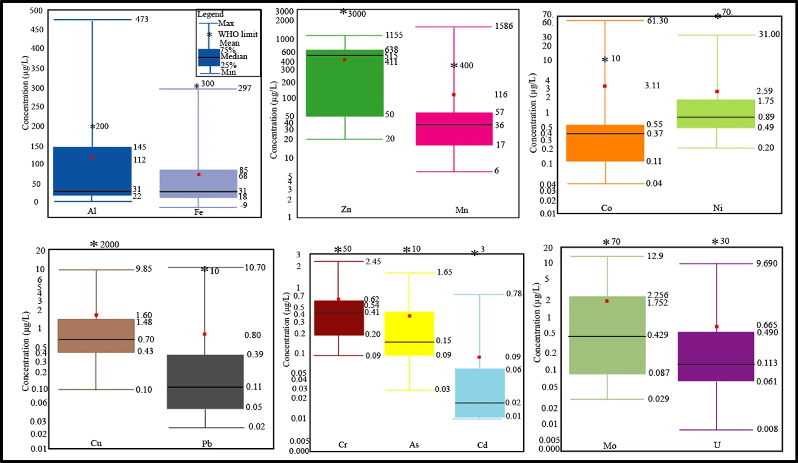

Chounna Yemele Gergino
Environmental Engineer and Researcher.
Address: Padova, Italy
Publications
Here are current academic publications:
- Gergino Chounna , Philip S. J. Minderhoud, Leonard Ohenhen, Katharina Seeger, Manoochehr Shirzaei, Pietro Teatini (2025). Land subsidence dynamics and their interplay with spatial and temporal land-use transitions in the Douala coastland, Cameroon . Natural Hazards and Earth System Sciences (NHESS), (Preprint).
- Ohenhen, L. O., Shirzaei, M., Davis, J. L., Tiwari, A., Nicholls, R., Dasho, O., Sadhasivam, N., Seeger, K., Werth, S., Chadwick, A. J., Onyike, F., Lucy, J., Atkins, C., Daramola, S., Ankamah, A., Minderhoud, P.S.J, Gergino Chounna (2025). The Global Threat of Sinking Deltas . Research Square, (Preprint).
-
Ateh Suh N. N., Roberto R., Abdou Nasser N. M., Paula Ngo F. T., and Gergino Chounna (2024).
Material recovery as a strategy for landfill remediation: a case study of Nkolfoulou landfill, Cameroon
.
Journal of Material Cycles and Waste Management.
-
Wilson Y. FANTONG, Gergino Chounna , Therese L. L. Jokam NENKAM, Alain T. FOUEPE, Ernest CHI FRU4, Yaya FODOUE, Claire CARLIER, Sara VASSOLO, Yollande NKWESSE, Pierre NBENDAH, George E. NKENG, Nelly MONTCOUDIOL (2023).
Hydrogeochemistry of low agricultural soil yield in Sahelian and Sub-Tropical watersheds, Northern Cameroon
.
Journal of African Earth Sciences 199 (2023) 104823.
-
Haman J.B. Didier, Wilson Y. Fantong, Ewodo G. Mboudou, Auguste Ombolo, Therese L.L. Nenkam Jokam, Gergino Chounna ,and Gabriel Messi, (2023) .
Hydrogeochemistry and stable isotopes of groundwater in the Sudano-Sahelian zone: a case of the Mayo Bocki watershed in North Cameroon
.
Journal of HydroResearch 6 (2023) 36–51.
-
Haman J.B. Didier, Ewodo G. Mboudou, Wilson Y. Fantong, Auguste Ombolo, Gergino Chounna ,, Line Laure N.
Jokam, Gabriel Messi, (2023).
Potentially toxic elements contamination in groundwater and human health risk assessment in the Mayo Bocki watershed, North Cameroon.
.
Arabian Journal of Geosciences (2023) 16:479.

-
Alain Fouépé Takounjou · Wylliam Foano Dandjio · Yaya Fodoué · Wilson Fantong · Mohamed Ngah · Thérèse Jokam Nenkam · Claire Carlier · Sara Vassolo · Nelly Montcoudiol · Carine Enow Tarkang Gergino Chounna . Robert Kringel, (2022).
Assessment of water availability for agricultural activities in the Savanna Plateau of Adamawa, Cameroon
.
Environ Monit Assess (2022) 194:813.
2025
2024
2023
2022
Conferences Presentations and Posters
2025
2024


2023